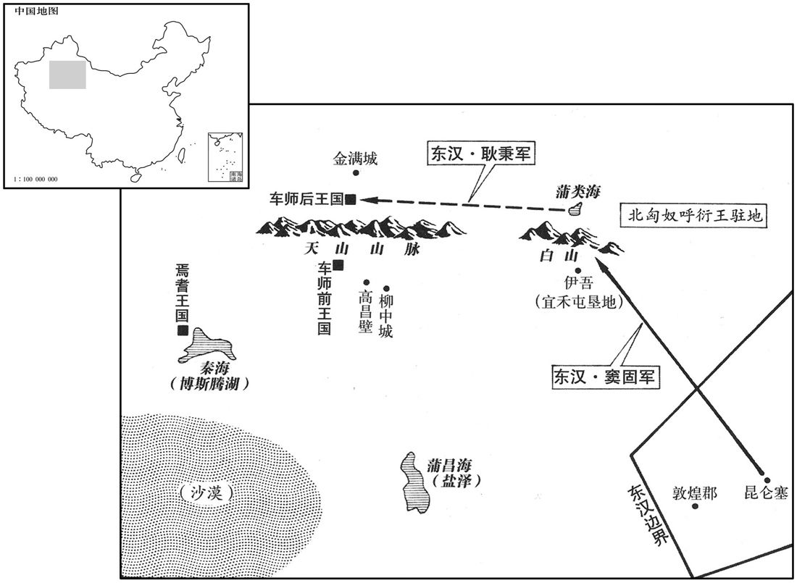

公元74年资治通鉴：本年记事、原文与白话对照
按原书编年位置阅读；追叙和史论不等于本年发生的事件。白话采用所据译本，缺译不以生成译文补齐。
卷45 · 本年记事
公元74年 · 汉显宗孝明皇帝永平十七年
十七年〔（甲戌、七四）〕
上传原文的注释括号有异常，字符原样保留；无法可靠划分的段落默认全文显示。
本年事件索引（现代整理）

本年形势与背景参考图
春，正月，上当谒原陵，夜，梦先帝、太后如平生欢，既寤，悲不能寐；即案历，明旦日吉，遂率百官上陵。〔上，时掌翻。〕其日，降甘露于陵树，〔考异曰：帝纪云：「甘露降甘陵。」皇后纪云：「谒原陵，甘灵降于树。」然则实降原陵也。帝纪误以「原」为「甘」。〕帝令百官采取以荐。会毕，帝从席前伏御床，视太后镜釥中物，〔釥，镜匣也，音廉。〕感动悲涕，令易脂泽装具；左右皆注，莫能仰视。〕沈约曰：三代以前无墓祭，至秦，始出寝，起于墓侧。汉因秦上陵皆有园寝，故称寝殿。起居衣服，象生人之具，古寝之意也。〕
两版字句有差异，建议核对原文。
春季，正月，明帝正准备去拜祭原陵，夜间梦见先帝和太后，如生前一样欢乐团聚。醒来后，心中悲伤不能入眠，便查看历书，发现第二天就是吉日，于是带领百官出宫祭陵。祭陵之日，天降甘露，洒在原陵的树上。明帝命令百官收集甘露作为祭品。仪式结束后，明帝从席垫前向御床俯身，观看太后镜匣中的梳妆用品，悲伤痛哭，命人更换化装品和化装用具。左右随从之人全都流下眼泪，不能抬头仰视。
北海敬王睦薨。〔睦，北海靖王兴之子。〕睦少好学，〔少，诗照翻。好，呼到翻；下同。〕光武及上皆爱之。尝遣中大夫诣京师朝贺，〔贤曰：中大夫，王国官也，掌奉王使京师，奉璧贺正月。朝，直遥翻。〕召而谓之曰：「朝廷设问寡人，〔贤曰：朝廷，谓天子也。〕大夫将何辞以对﹖」使者曰：「大王忠孝慈仁，敬贤乐士，〔乐，音洛。〕臣敢不以实对！」睦曰：「吁，子危我哉！〔贤曰：吁，音于。孔安国注尚书曰：吁者，〔疑怪之声。余按吁，匈于翻。〕此乃孤幼时进趣之行也。〔趣，读曰趋，又七喻翻。行，下孟翻。〕大夫其对以孤袭爵以来，志意衰惰，声色是娱，犬马是好，乃为相爱耳。」其智虑畏慎如此。〔时禁切藩王，法宪颇峻，故睦虑及此。〕
北海王刘睦去世。刘睦自幼喜爱读书，光武帝和明帝对他都很宠爱。他曾派中大夫进京朝贺，召这位使者前来，对他说：“假如朝廷问到我，你将用什么话回答？”使者说：“大王忠孝仁慈，尊敬贤才而乐与士子结交，我敢不据实回答！”刘睦说：“唉！你可要害我了！这只是我年轻时的进取行为。你就说我自从袭爵以来，意志衰退而懒惰，以淫声女色为娱乐，以犬马狩猎为爱好。你要这样说才是爱护我。”刘睦就是这样聪明多虑和小心谨慎。
二月，乙巳，司徒王敏薨。
二月乙巳（疑误），司徒王敏去世。
三月，癸丑，以汝南太守鲍昱为司徒。昱，永之子也。
三月癸丑（二十九日），将汝南太守鲍昱任命为司徒。鲍昱是鲍永之子。
益州刺史梁国朱辅〔益州部汉中、巴郡、广汉、蜀郡、犍为、牂柯、越巂、益州、永昌等郡。益州刺史治广汉郡雒县。〕宣示汉德，威怀远夷，自汶山以西，〔汶山，在郡湔氐道西徼外，江水所出。杜佑曰：茂州，汉汶山县，汶，晋书音读曰岷。湔，裴松之音剪。〕前世所不至，正朔所未加，白狼、盘木等百余国，皆举种称臣奉贡。〔种，章勇翻。〕白狼王唐菆作诗三章，歌颂汉德，〔菆，侧鸠翻，又徂丸翻。〕辅使犍为郡掾由恭译而献之。〔犍为郡，在雒阳西三千二百七里，夷言不兴中国通，故译而后献。犍，居言翻。掾，俞绢翻。由，姓也。秦有由余；或曰：楚王孙由子之后。〕
益州刺史梁国人朱辅宣扬汉朝的德政，使朝廷威望远播到遥远的蛮夷之邦。从汶山以西，前代汉人足迹所不到、朝廷力量所未及的白狼、木等一百余国，全都举国称臣进贡。白狼王唐曾作诗三首，歌颂汉朝的恩德。朱辅命犍为郡掾由恭译成汉文，献给朝廷。
初，龟兹王建为匈奴所立，〔龟兹，音见前。〕倚恃虏威，据有北道，攻杀疏勒王，立其臣兜题为疏勒王。班超从间道至疏勒，〔间，古苋翻。范史，疏勒国，去雒阳万三百里。〕去兜题所居盘橐城九十里，逆遣吏田虑先往降之，〔降，户江翻；下同。〕敕虑曰：「兜题本非疏勒种，〔种，章勇翻。〕国人必不用命；若不即降，便可执之。」虑既到，兜题见虑轻弱，殊无降意。〔降，户江翻。〕虑因其无备，遂前劫缚兜题，左右出其不意，皆惊惧奔走。虑驰报超，超即赴之，悉召疏勒将吏，说以龟兹无道之状，因立其故王兄子忠为王，〔考异曰：袁纪云：「求索故王近属，得兄榆勒立之，更名忠。」续汉书云：「求得故王峊子榆勒立之，更名忠。」今从超传。〕国人大悦。超问忠及官属：「当杀兜题邪，生遣之邪﹖」咸曰：「当杀之。」超曰：「杀之无益于事，当令龟兹知汉威德。」遂解遣之。
当初，龟兹王建是匈奴所立，他倚仗匈奴的威势，控制西域北道，进攻并杀死了疏勒王，将自己的臣子兜题立为新王。班超等人由偏僻小道抵达疏勒，在距离兜题所居住的城九十里处扎营，派属官田虑先去，劝兜题投降。班超吩咐田虑道：“兜题本来不是疏勒族人，人民一定不听他的命令。如果他不立即投降，便可将他逮捕。”田虑一行到达城以后，兜题见他们势单力薄，丝毫没有投降之意。田虑乘人不备，便上前劫持了兜题，将他捆绑起来。兜题的左右随从不料会出此事，全都又慌又怕地逃跑了。田虑急忙驰马向班超报告。班超立即赶赴城，召集全体疏勒文武官员，数说龟兹王的罪行，于是将前疏勒王哥哥的儿子忠立为疏勒王，人民十分欢喜。班超问忠及其属官：“应当杀死兜题呢，还是活着放他走呢？”众人都说：“应当杀死兜题。”班超说：“杀他无益于大事，应当让龟兹知道汉朝的恩威。”于是放走兜题。
夏，五月，戊子，公卿百官以帝威德怀远，祥物显应，并集朝堂奉觞上寿。〔班固西郁赋：左右廷中，朝堂百僚之位，萧、曹、丙、魏谋谟乎其上，盖在殿庭左右也。贤曰：寿者，人之所欲，故卑下奉觞进酒，皆言上寿。朝，直遥翻。〕制曰：「天生神物，以应王者；远人慕化，实由有德；朕以虚薄，何以享斯！唯高祖、光武圣德所被，〔被，皮义翻。〕不敢有辞，其敬举觞，太常择吉日策告宗庙。」仍推恩赐民爵及粟有差。〔时赐天下男子爵人二级，三老、孝悌、力田人三级，流人无名数欲占者人一级，鳏、寡、孤、独、笃癃、贫不能自存者，粟人三斛。〕
夏季，五月戊子（初五），公卿百官认为，圣上的恩德和威望遍及远方，有祥瑞应合，于是一同聚集朝堂，举酒向明帝上寿。明帝下诏说：“上天降下神物，是应合贤君的出现；边远民族仰慕归化，实由于贤君的德政。以朕的孱弱浅薄，有何资格担当？只因蒙受高祖皇帝和光武皇帝的圣恩大德才能如此。我不敢推辞，谨与众人一起举酒。命太常选定良辰吉日，策书祭告宗庙。”于是推广皇恩，赐给人民爵位和谷物，各有等级差别。
冬，十一月，遣奉车都尉窦固、驸马都尉取秉、骑都尉刘张出敦煌、昆仑塞，击西域，〔贤曰：昆仑，山名，因以为塞，在今肃州酒泉县西南，山有昆仑之体，故名之。周穆王见西王母于此山，有石室、王母台。又曰：前书敦煌郡广至县有昆仑障，宜禾都尉居也。广至故城；在今瓜州常乐县东。敦，徒门翻。仑，卢昆翻。〕秉、张皆去符、传以属固，〔符，传，皆合之以为信。符，兵符也。张晏曰：传，若今过所也。如淳曰：两行书缯帛，分持其一，出入关，合之乃得过，谓之传。此传，盖亦行兵所用以为信，非度关所用之传也。专将则有符、传，今以兵属固，故去之。去，羌吕翻。传，株恋翻。〕合兵万四千骑，击破白山虏于蒲类海上，遂进击车师。车师前王，即后王之子也，其廷相去五百余里。〔车师前王居交河城，后王居务涂谷。〕固以后王道远，山谷深，士卒寒苦，欲攻前王；秉以为先赴后王，并力根本，则前王自服。固计未决，秉奋身而起曰：「请行前。」乃上马引兵北入，众军不得已，并进，斩首数千级。后王安得震怖，出门迎秉，脱帽，抱马足降，〔降，户江翻。〕秉将以诣固；其前王亦归命，遂定车师而还。〔还，从宣翻，又如字。〕于是固奏复置西域都护及戊、己校尉。〔宣帝置都护，元帝置戊、己校尉，自王莽之乱，西域与中国绝，不复置；今通西域，复置之。〕以陈睦为都护；〔考异曰：袁纪「睦」作「穆」，今从范书。〕司马耿恭为戊校尉，屯后王部金蒲城；〔贤曰：金蒲城，车师后王城廷也，今庭州蒲昌县城是也。杜佑曰：金蒲城，即车师后王所治务涂谷，今北庭府蒲类县也。〕谒者关宠为己校尉，屯前王部柳中城，〔贤曰：柳中，今西州县。考异曰：袁纪作「折中」，今从范书。〕屯各置数百人。恭，祝之孙也。〔耿况以上谷归光武，子孙多着功名。〕
冬季，十一月，派奉车都尉窦固、驸马都尉耿秉、骑都尉刘张都出敦煌郡昆仓塞，进攻西域。命耿秉、刘张都交出调兵符传，归属窦固。汉军集合部队共一万四千人，在蒲类海边打败了白山的北匈奴部队，于是进军攻打车师。车师前王是车师后王的儿子，两个王庭相距五百余里。窦固认为后王之地路远，山谷深险，士兵将受到寒冷的折磨，因而打算进攻前王。但耿秉认为应当先去打后王，集中力量除掉老根，那么前王将不战自降。窦固思虑未定，耿秉奋然起身道：“请让我去打先锋！”于是跨上战马，率领所属部队向北挺入。其他部队不得已而一同进军，斩杀数千敌人。车师后王安得震惊恐慌，便走到城门外面迎接耿秉，摘去王冠，抱住马足投降。耿秉便带着他去拜见窦固。车师前王也随之投降。车师便全部平定，大军回国。于是窦固上书建议重新设置西域都护及戊、己校尉。明帝将陈睦任命为西域都护，将司马耿恭任命为戊校尉，屯驻后车师金蒲城；将谒者关宠任命为己校尉，屯驻前车师柳中城，各设置驻军数百人。耿恭是耿之孙。